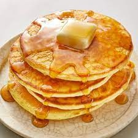

Buttermilk Pancakes

Description
Great Grandma Seefeldt's delicious buttermilk pancakes are so flavorful and delicious that
you can eat them cold, without butter or syrup. Of course, they're best when their straight
off the grill with your favorite toppings.
Ingredients
- 1 1/2 cups of flour
- 1 tsp baking soda
- 1 tsp baking powder
- 1 tsp salt
- 2 Tbsp sugar
- 1/4+ cups old fashioned oats
- 2 eggs
- 1/3 cup vegetable oil or light tasting olive oil
- 1 1/2 cups buttermilk
- 1/2 cup milk
Steps
- Add all ingredients to a large bowl and mix thoroughly, making sure to scrape sides and
bottom of bowl.
- If mix is too runny, add more flour and/or oatmeal to thicken it up.
- Warm griddle or skillet to 375 degrees and pour pancake mix onto griddle. I like to use a
measuring cup or a bowl with a spout to make pouring easier.
- Cook until light golden brown, flipping as needed. You can tell they are ready to flip as
soon as you see the edges starting to firm up.
- Remove from griddle and serve with your favorite toppings.